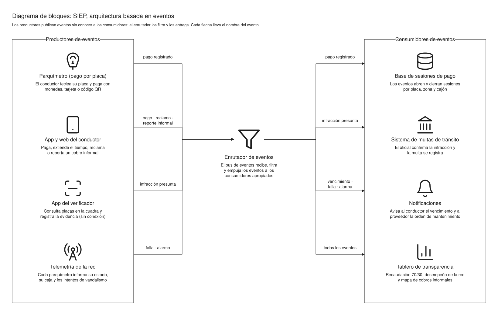

Tarea 3 · Caso 4 · Análisis y Diseño de Sistemas 2
Repensar el parquímetro, empezando por la placa.
SIEP es nuestra propuesta para el caso Repensando los parquímetros: el pago queda ligado a la placa, el equipo que ya existe cobra con tarjeta y avisa si lo dañan, y todo lo que se cobra se publica.
El problema
Tres de los seis problemas no se arreglan con una pantalla mejor.
SERVIparq, el programa de parquímetros de la Ciudad de México, encontró seis problemas. Los ordenamos por su causa: así se ve qué necesita diseño de información y qué necesita arquitectura y gobierno.
-
Vecinos que no fueron consultados
El programa se instaló sin preguntar. La inconformidad empieza antes del primer cobro.
Gobierno · P-01 -
Cuidacarros que siguen cobrando
Personas ajenas al programa apartan el lugar y cobran por él. El caso, mexicano, les dice «franeleros».
Cobro informal · P-02 -
Instrucciones confusas y solo monedas
El panel no sigue el orden en que la gente usa el parquímetro, y sin cambio no se puede pagar.
Información · P-03 -
No se sabe cómo reclamar
Quien recibe una multa injusta no sabe a quién acudir ni cuánto tarda la respuesta.
Información · P-04 -
Falta personal
El equipo ya podía cobrar con tarjeta y avisar vandalismo, pero esas funciones estaban apagadas.
Capacidad · P-05 -
Nadie ve a dónde va el dinero
El 70 % opera y mantiene, el 30 % vuelve a la comunidad. Pero nadie lo publica, y el sistema parece corrupto.
Gobierno · P-06
Investigación
En Guatemala se cobra por media hora, y también cobran los cuidacarros.
Trajimos el caso a casa. Las cifras salen de notas de prensa verificadas; las fuentes están al pie de la página.
- Q3/30 min
- Tarifa en la capital, según el Acuerdo COM-40-2022, vigente desde febrero de 2024.
- 2,500
- Objetos retirados en un operativo de la PMT (2023): botes, llantas y sillas que apartaban lugares.
- 33
- Personas identificadas cobrando entre Q35 y US$50 a turistas en la zona 13 (abril de 2026).
- Q12.3M
- Cobró Antigua en 2025 por estacionamiento, con su marbete digital MarbEx. En 2026 la Corte suspendió su base de placas.
La información, por momento de uso
- 01 · Antes del uso
Saber que es zona de cobro, y cuánto cuesta.
Señal con el color de la banqueta, la tarifa y el número del parquímetro. Si la tarifa está a la vista, nadie le paga de más a un cuidacarros.
- 02 · Durante
Tres pasos: placa, tiempo y pago.
Una pantalla por paso, con la tarifa siempre arriba. Monedas, tarjeta o QR. El aviso «este es el único cobro» va en el paso de pago.
- 03 · Después
Un comprobante que sirve para reclamar.
Folio, hora de vencimiento y la línea de atención. La app avisa 10 minutos antes y deja extender el tiempo sin volver.
La solución
Evaluamos cuatro alternativas y elegimos pagar por placa con el equipo que ya se compró.
Cada alternativa se miró desde las cuatro perspectivas de la consigna: arquitectura del software, calidad, ciclo de vida y arquitectura de la información.
S-2
Pago por placa, conectado
Monedas, tarjeta o celular. El pago queda en la placa, desaparece el boleto y el verificador consulta en su teléfono. Ataca cinco de los seis problemas.
El núcleoS-1 · Rediseñar la información
Lo que hizo Smartmedia. Queda adentro de S-2 como forma de diseñar y aceptar cada pantalla.
DentroS-3 · Sensores y tarifa por demanda
Como San Francisco. Caro y expuesto al vandalismo: se activa cuando haya datos.
DespuésS-4 · Gobierno comunitario
Consulta previa a los vecinos, tablero público del 70/30 y un protocolo para los cuidacarros. Ningún software resuelve solo los problemas 1, 2 y 6.
Alrededor
Arquitectura del software
Cada proceso es un servicio, y los servicios se avisan con eventos.
Estilo principal SOA: los cinco procesos del negocio son cinco servicios independientes. Cuando alguien paga, el parquímetro publica «pago registrado» y reaccionan la base de datos, las notificaciones y el tablero, sin conocerse entre sí.

- El pago queda en la placa
No hay boleto que se caiga ni que haya que leer.
- Se encienden tarjeta y alarma
Funciones del equipo comprado que estaban apagadas.
- La multa nace del oficial
El verificador registra evidencia; el oficial confirma.
- Todo lo cobrado se publica
Tablero con el 70/30 conciliado con el banco.
Calidad del software
Nos comprometemos con cuatro números que se pueden medir.
Modelo ISO 9126 del programa: calidad del producto y calidad en uso. El 72 % es el criterio del caso: 80 % encuentra la información y, de ellos, 90 % la usa bien.
- 72%
- Eficacia: conductores que pagan sin ayuda la primera vez.
- 2s
- Rendimiento: para saber si una placa pagó, en 95 de cada 100 consultas.
- 0
- Disponibilidad: pagos perdidos aunque se caiga la señal. El equipo guarda y reenvía.
- 100%
- Seguridad: multas con foto, hora, ubicación y confirmación del oficial.
Parte desarrollada
Probá el prototipo: el mismo que usamos para medir el 72 %.
Escribí una placa, elegí el tiempo y pagá. El panel de la derecha cronometra cada intento y calcula la eficacia contra el criterio acordado. Usa el tarifario real de la capital.
Arquitectura en el ciclo de vida
Se construye en espiral por fuera y con Scrum por dentro.
Con los siete factores de la clase: la pantalla se descubre probando con personas, cada Delegación es distinta y hay riesgos fuertes al inicio.
Espiral
Cada vuelta empieza revisando los riesgos: legales, vandalismo y aceptación de los vecinos.
Scrum con arquitectura
Pasos 1, 2, 4 y 9 de la lámina de clase: especificar y priorizar los casos de uso, arquitectura base en el primer sprint y refinarla en cada sprint.
- 0
Concertación
Consulta en una colonia piloto, comité vecinal y conteo de cuidacarros con la PDH.
- 1
Pago por placa
Equipo reconfigurado, verificación por placa y multa con evidencia.
- 2
App y red monitoreada
Pago desde el celular, avisos, alarma de vandalismo y reportes.
- 3
Datos y sensores
Con datos de ocupación: sensores y tarifa por demanda.
Preguntas del caso
Cinco de las catorce, en corto.
Las catorce respuestas completas están en el documento, sección 6.
Es el producto de dos probabilidades: 80 % encuentra la información (la gente usa el parquímetro con prisa) por 90 % que la usa bien. Proponemos además fijar un umbral por tarea, según lo que cuesta fallar.
Las instrucciones de pago (P-03) y, en parte, la frustración del primer uso (P-04). La falta de personal (P-05) pudo abordarse más a fondo: el equipo ya traía pago electrónico y alarma.
El de Seattle cubre el momento «antes del uso» con información en web y app. El de San Francisco automatiza la supervisión con sensores, pero es caro. La mejor relación era habilitar lo que ya tenía el equipo y sumar la información de Seattle.
Bodystorming es recrear la calle en una sala y actuar la situación. Le devolvió a Smartmedia el contexto que el permiso faltante le quitó: la prisa, la distancia al carro y la falta de cambio.
Sí, pero con método: cuando la medición cae debajo del umbral o cambia el contexto. Por eso la tarifa y los textos son configuración, y el desempeño se mide en producción.
Grupo 2
Tres roles, una entrega versionada con GitFlow.
Santiago Julián Barrera Reyes
Scrum Master · coordinador
Análisis del caso, investigación en Guatemala, arquitectura en el ciclo de vida e integración.
Jemima Solmaira Chavajay Quiejú
Product Owner
Problemas y requisitos de desempeño, calidad del software y arquitectura de la información.
Byron Josué Par Rancho
Equipo de desarrollo
Alternativas de solución, arquitectura del software y prototipo.
main develop feature/* release/* Una rama por entregable, integradas en develop y publicadas en main con una versión etiquetada.
Todo el trabajo, para leer y presentar.
El documento completo con carátula, índice y referencias; la presentación animada con el guion en las notas; y un guion por integrante.